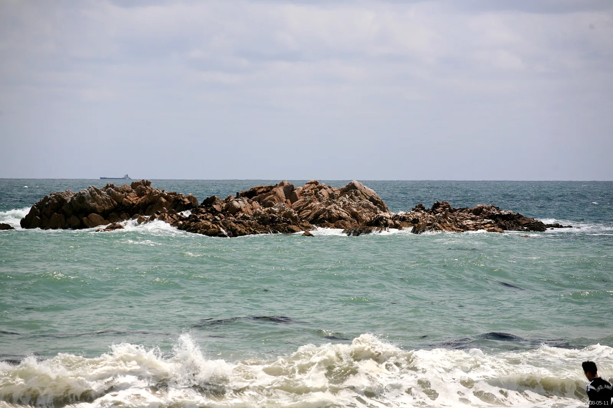
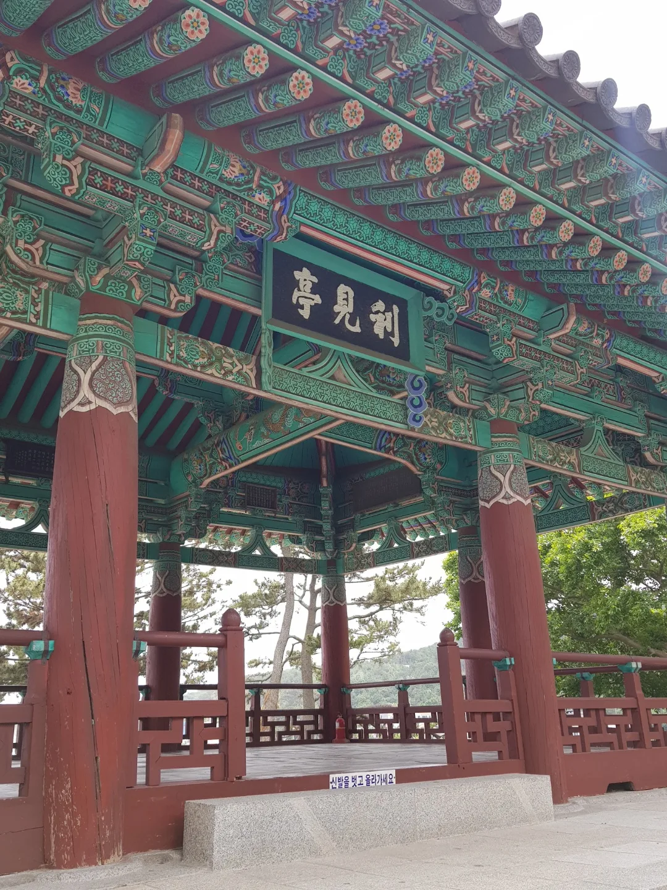
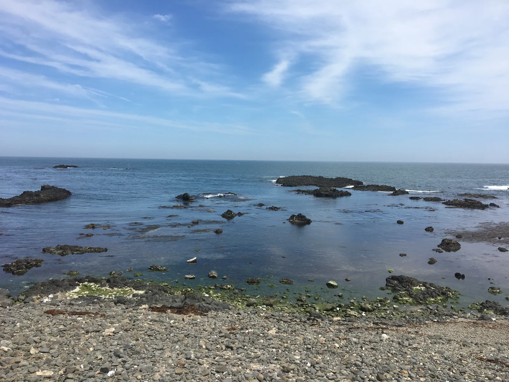
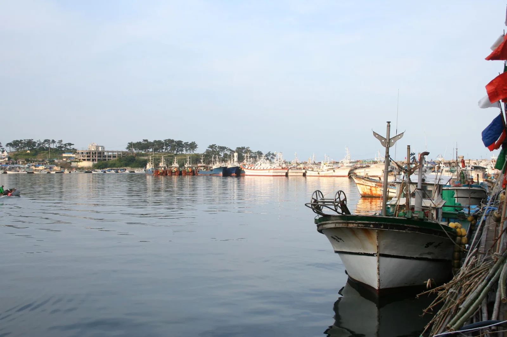
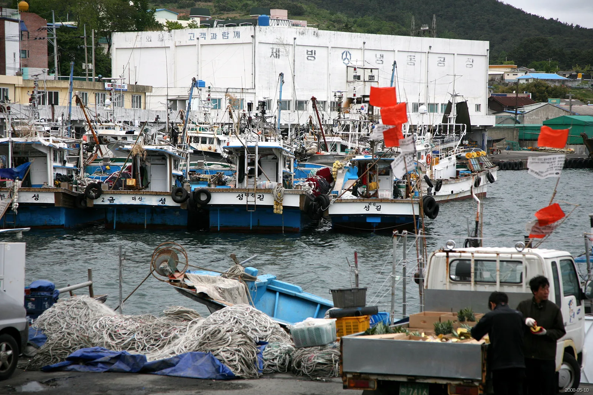
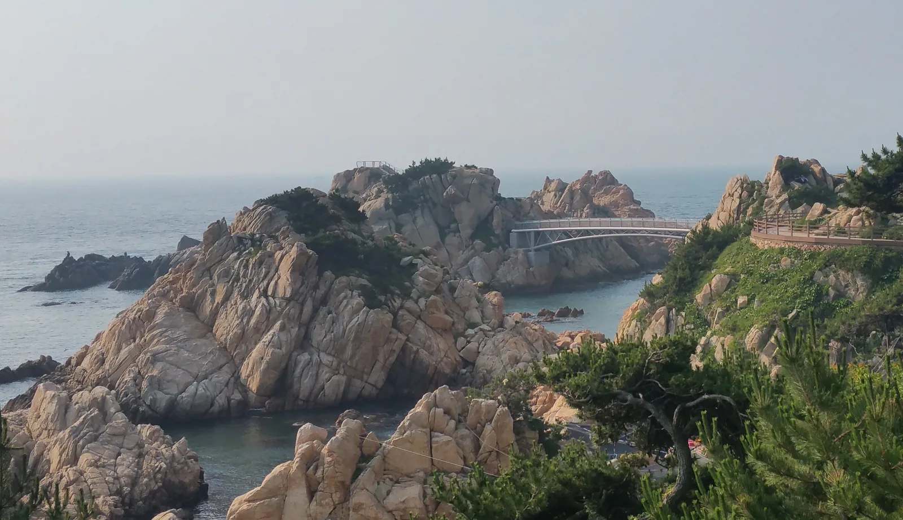
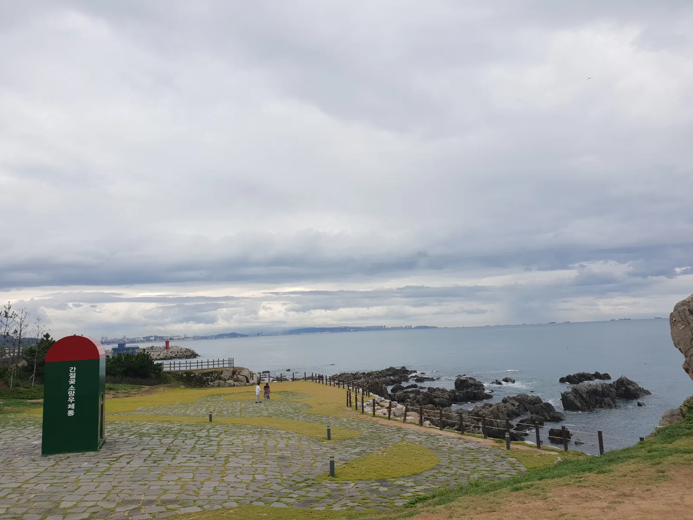

▲ 경주 봉길해변에서 약 200m 떨어진 바다 위 바위섬, 문무대왕릉. 통일신라를 완성한 문무왕이 죽어서도 나라를 지키겠다며 남긴 수중릉으로, 31번 국도 해안 드라이브의 상징적인 출발점이다 ⓒ Wikimedia Commons
지도에서 31번 국도를 찾아보면 의외로 긴 도로다. 명목상 기점은 부산 기장군, 종점은 강원 양구군 인근까지 이어진다. 하지만 자동차 여행자들 사이에서 '31번 국도 드라이브'라고 하면 대개 한 구간을 가리킨다. 울산을 지나 경주 감포읍으로 넘어가는 동해안 해안도로 구간이다. 이 길은 도로가 해안선에 바짝 붙어 달리는 몇 안 되는 국도 중 하나로, 오른쪽 차창 밖으로 파도가 부서지는 바위와 몽돌해변이 끊임없이 스쳐 지나간다. 경주 쪽 시작점은 신라 문무왕의 수중릉이 있는 봉길해변이고, 울산 쪽 끝에는 소나무숲과 기암괴석으로 유명한 대왕암공원이 있다. 두 지점 사이에 이견대, 양남 주상절리, 감포항, 강동 화암주상절리가 순서대로 놓여 있어, 하루 코스로 돌기에 무리가 없다.
1. 문무대왕릉과 이견대 — 바다에 잠든 왕
코스의 시작은 경주시 문무대왕면 봉길리 봉길해수욕장이다. 백사장에서 약 200m 떨어진 바다 위에 크고 작은 바위 여러 개가 모여 만든 암초가 있는데, 이곳이 신라를 통일한 문무왕의 수중릉으로 전해지는 대왕암이다. 문무왕은 죽어서도 용이 되어 나라를 지키겠다는 유언을 남겼고, 그 뜻에 따라 화장한 유골을 이 바다에 모셨다고 전해진다. 주차장은 봉길리 846-4번지에 있으며 무료로 이용할 수 있고, 공동 샤워시설과 화장실도 갖추고 있어 여름철에는 해수욕객도 많이 찾는다. 입장료는 따로 없고 연중 개방된다.

▲ 문무대왕릉에서 차로 5분 거리에 있는 이견대. 신라 왕이 대왕암을 바라보며 제를 올렸다고 전해지는 언덕 위 정자다 ⓒ Wikimedia Commons
문무대왕릉에서 차로 5분 정도 떨어진 언덕 위에는 이견대가 있다. 신라 왕이 대왕암을 바라보며 부왕에게 제사를 지냈다고 전해지는 자리에 세운 정자로, 지금 건물은 후대에 복원한 것이지만 언덕 위에서 내려다보는 동해와 대왕암의 구도가 좋아 잠깐 들르기 좋다. 감은사지 삼층석탑도 이견대에서 멀지 않은 곳에 있어, 시간이 넉넉하다면 함께 둘러보는 경우가 많다.
2. 양남 주상절리 파도소리길 — 부채꼴로 누운 돌기둥

▲ 경주 양남면 해안의 주상절리 지대. 용암이 식으며 갈라진 육각형 돌기둥이 해안을 따라 넓게 드러나 있다 ⓒ Wikimedia Commons
이견대에서 남쪽으로 조금 더 내려가면 양남면 읍천리 해안에 닿는다. 이곳은 용암이 식으면서 만들어진 육각형 돌기둥, 주상절리가 해안선을 따라 넓게 드러나 있는 곳으로 경북 동해안 국가지질공원으로도 지정돼 있다. 읍천항과 하서항 사이 약 1.7km 구간을 잇는 파도소리길은 데크로드와 구름다리, 전망대가 잘 갖춰져 있어 가볍게 걷기 좋다. 특히 세계적으로도 드물다는 부채꼴 모양의 주상절리를 볼 수 있는 전망대가 이 길의 하이라이트다. 주차는 읍천항 공용주차장을 이용하면 되고 요금은 무료, 산책로 자체도 상시 개방에 입장료가 없다.
대한민국 구석구석에서 확인 가능3. 감포항 — 해안 드라이브 한복판의 어촌

▲ 경주 감포항. 송대말등대에서 양남 주상절리 전망대까지 약 20km에 걸친 감포해안길의 중심에 있는 어촌이다 ⓒ Wikimedia Commons
양남 주상절리에서 해안도로를 따라 북쪽으로 올라오면 감포읍내와 감포항이 나온다. 감포해안길은 송대말등대에서 양남 주상절리 전망대까지 약 20km에 걸쳐 이어지는 구간으로, 해파랑길 11코스와 겹치는 부분이 많아 도보 여행자와 드라이버가 함께 즐기는 길이다. 감포항 자체는 활어회와 과메기로 유명한 실제 조업 항구라, 오전에 지나가면 그물을 손질하는 어선과 위판장의 활기를 그대로 볼 수 있다. 1955년 세워진 송대말등대는 현재는 운영을 멈췄지만, 등대 옆에 새로 지은 5층 한옥 건물 '송대말등대 빛체험전시관'에서 디지털 미디어아트 전시를 볼 수 있다. 감포해국길이라는 이름의 벽화거리도 항구 인근에 있는데, 10~11월이면 벽화 옆으로 실제 해국이 피어나 사진 명소가 된다.

▲ 감포항에 정박한 소형 어선들. 실제로 조업이 이뤄지는 항구라 이른 아침에는 어시장의 활기를 함께 느낄 수 있다 ⓒ Wikimedia Commons
4. 울산 강동 화암주상절리 — 경주에서 울산으로

▲ 울산 강동 화암 주상절리. 경주 양남 주상절리와는 다른 지점으로, 도로가 경주에서 울산으로 넘어가는 구간에 자리한다 ⓒ 한국관광공사 (공공누리 제1유형)
감포를 지나 31번 국도를 따라 계속 남하하면 행정구역이 경주에서 울산으로 바뀐다. 울산 북구 강동 일대에도 양남과는 별개로 화암주상절리라 불리는 해안 지형이 있어, 도로 위에서 차를 세우고 잠시 둘러보기 좋다. 이 구간부터는 강동몽돌해변, 주전몽돌해변처럼 몽돌이 파도에 쓸리며 특유의 소리를 내는 해변이 잇따라 나타나는데, 울산 12경 중 하나로 꼽히는 구간이기도 하다.
5. 대왕암공원 — 코스의 종착점

▲ 울산 대왕암공원의 출렁다리. 303m 길이의 해상 현수교로, 소나무숲과 기암괴석 사이를 가로지른다 ⓒ Wikimedia Commons
드라이브의 종착점은 울산 동구 대왕암공원이다. 1906년 세워진 울기등대가 있어 한동안 '울기공원'으로 불리다가 2004년 지금의 이름으로 바뀌었다. 울창한 해송림 사이로 난 산책로를 따라가면 기암괴석이 파도에 깎인 해안 절경이 이어지고, 끝에는 303m 길이의 해상 현수교(출렁다리)가 놓여 있다. 공원 입장은 무료이며, 대왕암공원 주차장(동구 봉수로 155)과 대왕암공원 타워 주차장(동구 해수욕장 10길 101)을 이용할 수 있다. 평일에는 2시간 이내 무료지만, 주말과 공휴일에는 기본요금 500원에 10분당 200원씩 추가된다. 개장 시간은 오전 9시부터 오후 6시까지다.
울산문화관광정보에서 확인 가능| 구간 | 주요 스팟 | 주차 | 차량 이동 소요 |
|---|---|---|---|
| 봉길해변 | 문무대왕릉 | 무료(봉길리 846-4) | 출발점 |
| 봉길해변 → 이견대 | 이견대, 감은사지 | 이견대 소규모 무료 주차장 | 약 5분 |
| 이견대 → 읍천항 | 양남 주상절리 파도소리길 | 읍천항 공용주차장(무료) | 약 10분 |
| 읍천항 → 감포항 | 감포해안길, 송대말등대 | 감포항 주변 노상·공영주차 | 약 10~15분 |
| 감포항 → 강동 화암주상절리 | 강동·주전 몽돌해변 | 해변 인근 소규모 주차장 | 약 20분 |
| 강동 → 대왕암공원 | 울기등대, 출렁다리 | 대왕암공원 주차장(평일 2시간 무료) | 약 15분 |
※ 위 소요시간은 지도 서비스 기준 실주행 어림값으로, 신호 대기와 성수기 정체에 따라 달라질 수 있다. 전체 구간을 쉬지 않고 이동하면 1시간 안팎이지만, 각 경유지에서 걷고 사진을 찍는 시간까지 더하면 반나절 코스로 잡는 편이 현실적이다.
6. 시간이 남는다면 — 간절곶까지 연장

▲ 대왕암공원에서 31번 국도를 따라 더 남쪽으로 내려가면 만나는 울산 간절곶. 국내 최초 해돋이 명소로 꼽히며 소망우체통이 상징물이다 ⓒ Wikimedia Commons
대왕암공원에서 하루를 마무리해도 충분하지만, 시간과 체력이 남는다면 31번 국도를 따라 더 남쪽으로 내려가 간절곶까지 코스를 늘릴 수 있다. 울주군 서생면에 있는 간절곶은 국내에서 해돋이가 가장 먼저 시작되는 곳 중 하나로 알려져 있으며, 대형 풍차와 빨간 우체통 모양의 '소망우체통'이 상징물이다. 간절곶삼거리를 통해 31번 국도에서 바로 진입할 수 있고, 공영주차장과 임시주차장을 무료로 이용할 수 있다.
📍 가을철 방문 팁
이 구간은 가을에 특히 붐빈다. 양남 주상절리와 대왕암공원 모두 해안 절벽 위 산책로라 강풍이 불면 통제될 수 있으니, 태풍이나 강풍 특보가 있는 날에는 방문 전 관리 기관에 개방 여부를 확인하는 것이 안전하다. 감포해국길의 해국은 10~11월이 절정이라, 9월 중순 방문 시에는 아직 꽃이 일부만 피어 있을 수 있다는 점도 참고하자.
체크포인트
- 경주 양남 주상절리(파도소리길)와 울산 강동 화암주상절리는 이름이 비슷하지만 서로 다른 위치에 있는 별개의 지형이다.
- 문무대왕릉·이견대·주상절리·감포항·대왕암공원 모두 입장료가 없고 주차도 대부분 무료이거나 저렴하지만, 요금 체계는 관리 기관 사정에 따라 바뀔 수 있어 방문 전 확인이 안전하다.
- 해안도로 특성상 구간 대부분이 왕복 2차로이므로, 정체가 심한 주말·연휴에는 이동 시간을 넉넉히 잡아야 한다.
정리
체크포인트
- 31번 국도는 부산 기장~울산~경주 감포~포항을 잇는 동해안 국도이며, 경주~울산 구간이 해안 드라이브로 가장 유명하다.
- 추천 경유 순서: 문무대왕릉(봉길해변) → 이견대 → 양남 주상절리 파도소리길 → 감포항 → 울산 강동 화암주상절리 → 대왕암공원.
- 전체 구간은 실주행 기준 1시간 안팎이지만, 경유지마다 걷고 둘러보는 시간을 더하면 반나절~하루 코스로 잡는 것이 현실적이다.
- 시간이 남으면 대왕암공원에서 더 남쪽으로 내려가 간절곶까지 코스를 확장할 수 있다.
- 대부분 무료 개방·무료 주차이지만 강풍·태풍 시 산책로가 통제될 수 있으니 방문 전 확인이 필요하다.